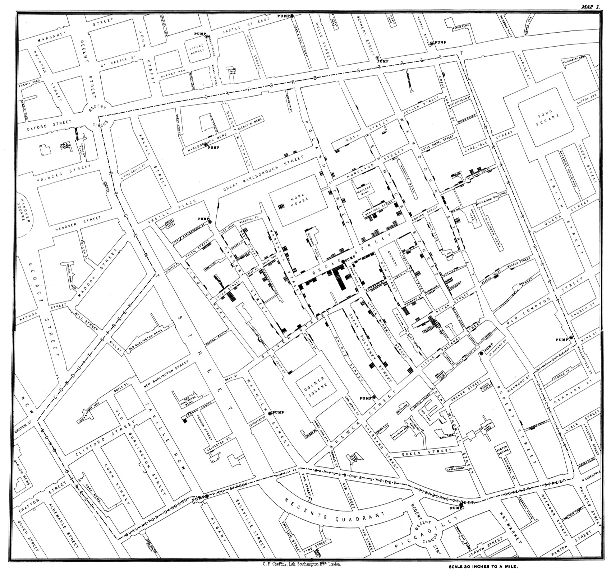
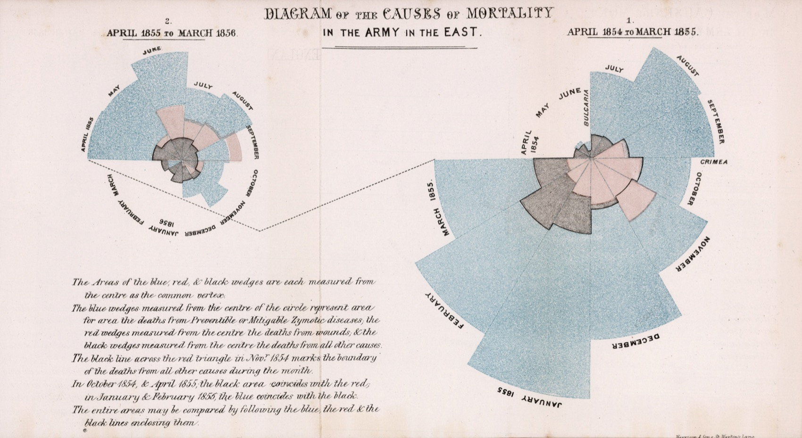
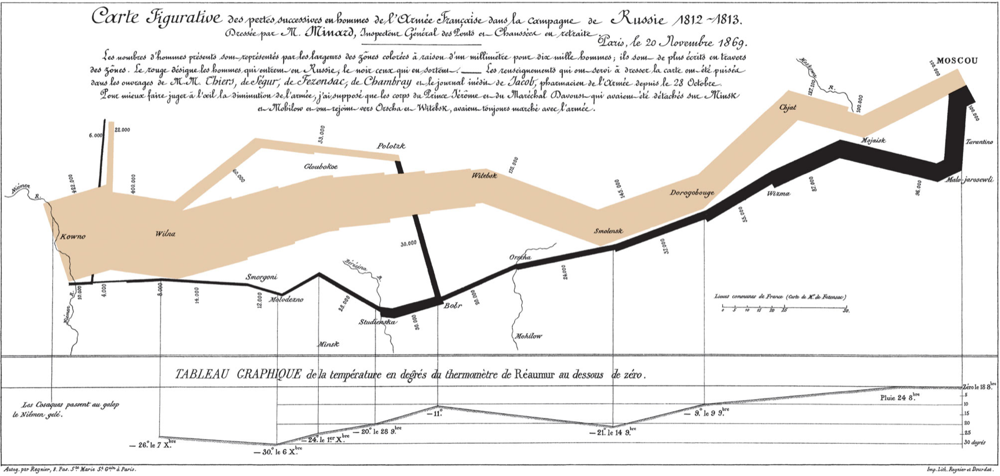

Turn Analysis Into a Recommendation People Can Understand
Session 1
Lecture / demo
Session 2
Round table on YOUR work
This is decision support, not decoration. We help each other turn finished analysis into something a busy reader can act on.
Course progress
prototype
verification
threshold
object card
draft package
handoff
Input A3 output, chart, map, model result, or variant table
Change figure title, threshold, uncertainty note, recommendation sentence
Output object-card draft + one decision-ready figure
Feeds A3 final output and A4 Practice Case/Object Card
Before evaluation
A3 is due this week; evaluation begins next. You will use AI, so both gates apply to everything you submit.
Reproducibility Could someone re-run your workflow and get your result without you in the room? Environment + steps + “re-running reproduces the figure.”
AI fact-checking For any AI-assisted part: name the output type (fact / relationship / code) and state the final-gate check that made it trustworthy.
Carry both into your Object Card and Reproducibility Capsule.
| AI output | What it’s good for | Final-gate check |
|---|---|---|
| Fact reiteration | standards, definitions, precedent claims | verify against the primary source or document |
| Relationship simulation | comfort, perception, fuzzy spatial links | compare with science logic + one bounded metric |
| Workflow / code | formulas, scripts, GhPython, notebook cells | run it, check units/ranges, test a known case |
See Week 8 for the full treatment.
Working with AI honestly
Four obligations that travel with any AI-assisted work — this is ML Primer Principle 12 in practice:
Disclose State what AI did, the prompts/seeds, and what you verified. Undisclosed AI is the problem, not AI use.
Sources & IP Use open or owned references; cite image and data sources; respect licenses; do not pass a model’s averaged answer off as your own evidence.
Bias Models return the common/average answer and inherit dataset bias — name who or what your data and outputs might exclude.
Accountability You remain responsible for every claim. AI is a companion, never the final gate — and never identify people without consent.
See the AI-Assisted Fact-Checking Card.
The problem
Strong work can still fail at the moment it reaches an audience.
Case 1 · method over message
Case 2 · correct but unclear
Anecdote · a figure that failed
What went wrong The night before the Challenger launch, engineers argued against a cold-weather launch — but their charts scattered O-ring damage across thirteen pages and never plotted damage against temperature. The pattern stayed invisible; the launch was approved.
The lesson Correct data is not enough. If the figure does not make the relationship visible, the decision does not get made. (Edward Tufte’s classic case study of this launch.)
The test Could you explain your semester in two slides to a busy critic, client, or studio tutor who gives you three minutes?
If not, your findings are still trapped inside your process.
Story structure
This is not simplification for its own sake. It is decision support.
Anecdote · a figure that drove a decision

What it did Plotting each cholera death as a mark on the street map made one water pump’s deadly cluster impossible to miss.
The lesson The figure located the cause, so the action was obvious: remove the Broad Street pump handle. A figure that locates the problem changes the decision.
Do not begin with
Begin with
If your recommendation depends on a case like this, what would a skeptical stakeholder ask first?
Figure rescue
Give your figure three seconds. Can a viewer tell:
If not, it needs revision.
Anecdote · make the dominant cause unmissable

What it did The large wedges showed deaths from preventable disease dwarfing deaths from wounds — visible at a glance, no table required.
The lesson One dominant visual comparison can carry an argument that columns of numbers cannot. Make the biggest thing the most visible thing.
Before · the weak figure
After · the cleaned figure
Do this now Bring one weak figure and improve it under these rules:
Present the before and after in 60 seconds.
Object cards
During the Object Fair, a viewer gives your board about 30 seconds. In that time they should be able to:
Anecdote · one figure, the whole story

What it shows Army size, location, direction, and temperature on the retreat — the shrinking band tells the whole catastrophe without a caption.
The object-card ideal Tufte called it among the best statistical graphics ever drawn. Your object card has the same job: one figure that carries the decision on its own.
The whole card is built around one dominant recommendation. Everything else supports it.
1 · The dominant recommendation The one sentence the viewer must leave with. Largest, first, unmissable.
2 · One comparison figure A single legible chart that shows the comparison behind the recommendation — secondary to the headline, never competing with it.
3 · One threshold sentence The rule that turns the comparison into a decision: “we prefer X once the gain clears Y.”
4 · One limitations note Where the evidence is weakest and what would change the conclusion — small, honest, present.
Check your draft for
Thresholds
You still need:
A threshold turns a number into a decision rule. It looks different in each domain:
| Project type | Quantity | Example threshold |
|---|---|---|
| Transit / access | access time | within 10 min of a stop |
| Daylight study | daylight hours | ≥ 50% of area meets sDA 300/50% |
| Cost trade-off | cost premium | accept ≤ 8% over baseline |
| Facade / envelope | heat gain | reduce peak gain by ≥ 15% |
| Post-occupancy | survey confidence | ≥ 70% agreement, n ≥ 30 |
| Option | strongest benefit | main cost | biggest risk | recommendation |
|---|---|---|---|---|
| A | access | cost | moderate | good if budget is stable |
| B | performance | complexity | high | only if support is available |
| C | speed | lower upside | low | safest baseline |
A strong recommendation also says:
Patch to Grasshopper
Bridge pattern Use your figure or threshold to revise the GH design space: narrow a slider range, reject a variant family, color variants by risk, or export a final recommendation table.
A3 output
threshold
object card
GH range / color
design action
If the figure does not change any action, it is not yet a decision figure.
Uncertainty check
Question for Week 9 Who would disagree with your threshold, and what evidence would they use to move it?
Write that disagreement into the limitation note. A strong recommendation can survive a named counter-argument.
ML principle connection
Principle 8 — Uncertainty is real Predictions are probabilistic. Sample multiple outputs and critique; avoid presenting one lucky frame as truth.
Principle 11 — Evaluation must match the task Numbers alone can reward “pretty wrong” results. Pair a metric with human A/B judgment for visuals.
So State your threshold WITH its uncertainty, and make the figure show the comparison — not a single hero result.
The drill
Write one sentence:
The recommendation sentence Given this evidence, for this audience, I would do X under conditions Y and Z.
Then test whether the sentence:
Before next week, each student should have:
Take 10 minutes.
When you return, upload one rough figure or object-card draft to Slack for Session 2.
Session 2 · Round table
Decision Evidence Variation Output Threshold Action
Upload one rough material to Slack before Session 2 — a figure, output table, comparison chart, or object-card draft. feeds A3 + A4
Object this week: your result/figure and the design action it changes.
Did What does this figure currently show, and what is its one message?
Assumed What does the reader have to already know for it to land?
Risk Where is the takeaway unclear, or the uncertainty hidden?
Verify What threshold or label would tie it to a design action?
Post your four-step under your figure. Posting + an honest reconstruction is the graded unit — not how you spoke. Speak for 60–90 seconds: what result changes the design action, and what uncertainty remains visible?
How we run it Volunteers go first; a random draw may fill the remaining examples.
While others present You are not waiting your turn — you are reading. Note one clear move and one missing link per figure. Those notes are your participation record.
Week 9 · feeds A3 + A4